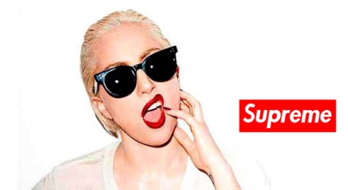
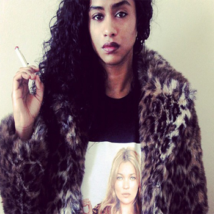

Supreme is a clothing brand founded in New York City in 1994.In 2004, a store was opened in Los Angeles, California, which is almost double the size of the original New York store. There are other stores in London, Tokyo (Harajuku & Daikanyama), Nagoya, Osaka, and Fukuoka.The Brand caters to the skateboarding, hip hop, and punk rock cultures. They have collaborated with photographers: Larry Clark, Terry Richardson and artists Kaws, Futura 2000, Damien Hirst, Takashi Murakami, Jeff Koons, Daniel Johnston and other artists. Supreme collaborates with many brands that it stocks such as Nike and Vans and together with Vans and Campbell's Soup released a T-shirt, Snapback and special Vans Shoes.Supreme stocks its own clothing label as well as Vans, Nike SB, Spitfire, Thrasher and Girl Distribution Company.
Supreme opened its doors on Lafayette Street in downtown Manhattan and became the home of New York City skate culture. At its core was the gang of rebellious young New York skaters and artists who became the store's staff, crew and customers.Supreme grew to be the embodiment of the downtown culture, playing an integral part in its constant regeneration. Skaters, punks, hip-hop heads - the young counter culture at large - all gravitated towards Supreme. While it grew into a downtown institution, Supreme established itself as a brand known for its quality, style and authenticity. Over its eighteen year history, Supreme has worked with some of our generation's most groundbreaking designers, artists, photographers and musicians - all who have helped continue to define its unique identity and attitudeThe mythology behind legendary New York streetwear brand Supreme is so potent, its easy to imagine founder James Jebbia as a king pin of downtown Manhattan. But as he will be the first to tell you, that couldnt be farther from the truth. In fact, Supremes core creative and business philosophies are the sum of Jebbias patchwork retail past; not, as one might assume, a storied legacy in skateboarding. His resume reads like a series of interconnected Google-map pins on a late-80s and early-90s SoHo New York. A British-transplant who arrived in New York around 1984, Jebbia got a job working at the now-defunct Parachute clothing store in SoHo.
When Stüssy left the business, Jebbia opened up Supreme in 1994 in a small storefront on Lafayette, a then-desolate street that was a perfect place for his clientele to skate first, shop second – an order that would very quickly be reversed. “I opened Supreme because there were no other decent skate shops around at the time,” Jebbia says. “I thought, cool, I might as well be the one to do it.”
The store was able to become the holy grail of high youth street culture by curating a mix of the city’s iconography – fashion, music, celebrity and politics – within its walls and then instantly sledge-hammering the city’s high-low playing field.Limited-edition Damien Hirst skateboards are around the same price as decks featuring lyrics from Public Enemy; custom Spalding basketballs might be sold under the artist Nate Lowman’s gritty canvases hanging on the wall. The brand’s iconic T-shirts, like everything in the store, have become collector’s items that are collages of controversial provocations and heady imagery. Designs have included an oversized New York Times logo, a portrait of Kate Moss, lyrics from the reggae musician Lee “Scratch” Perry, Mickey Mouse’s hands praying with rosary beads, Budweiser labels, and alarmist political slogans such as “Illegal business controls America.” As the shop is on the horizon of its second decade in business, all that hard work has become the focal point for a type of New York aesthetic that is just now entering the canon of great American dressing. When it first opened, the shop was a reflection of the times: the raw energy of Larry Clark’s film Kids; the haphazard elegance of grunge; the polished grit of the East Coast hip-hop movement of the time. In Jebbia’s conversation with Glenn O’Brien from the piece in Interview he asked me to read, Jebbia spoke about the lasting influence of that era in his brand’s sensibility.“Quality” is a word Jebbia stresses over and over again in conversations about his brand. You get a sense that he is growing impatient with just being known for on-the-nose artist collaborations or an effervescent downtown credibility. His brand’s true worth, and what his customers fetishize above anything else, is its casual matter-of-factness. Nothing looks sharper, but there is nothing snobby about that. There is something universal about it, really. If fashion and award shows have any teachable moments, it’s that cool doesn’t last on the fickle world stage. Quality does.
| BBC | Supreme | Blackscvle |